發佈通知
1.40
The renewal of UI
All UIs have been replaced. The theme became dark color, and operability was improved.
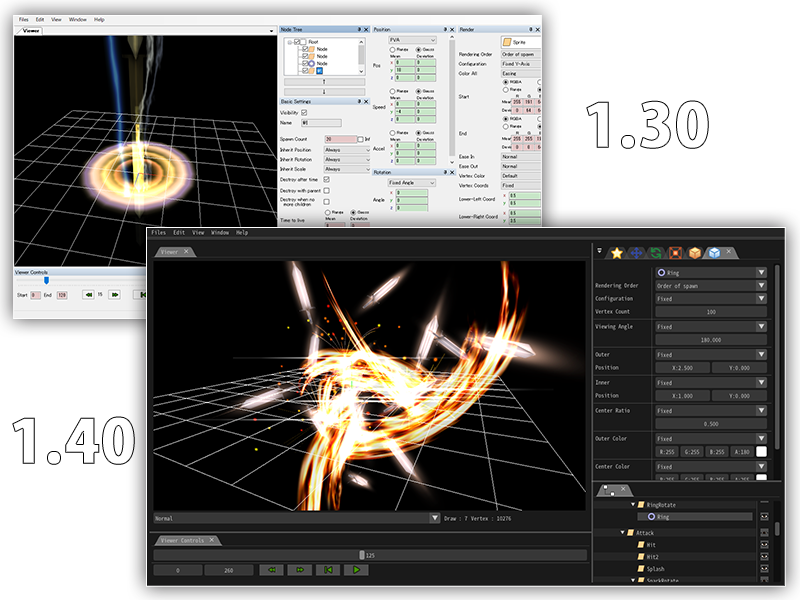
Support macOS
Support the tool for macOS.
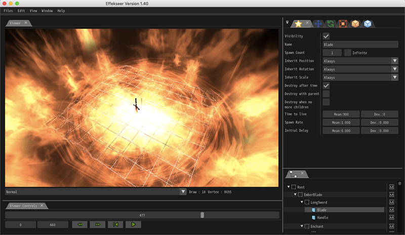
Addition of a function to read FBX with animation.
Effekseer can now load FBX with animation. It can be used as a model as well as a position of spawning method.
Addition of parameters to protect collied effects and objects.
A parameter to move in the depth direction has been added. This makes it easier to prevent effects and objects from getting collied.
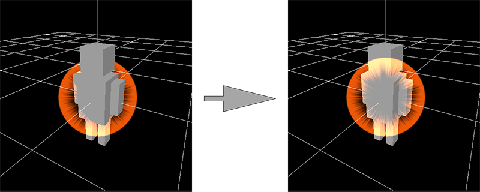Addition of parameters to make ribbons and tracks smooth
Parameters to make ribbons and tracks smooth has been added
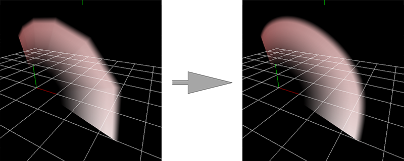
Improvement of distortion
Effects can make other effect distorted with rendering priority
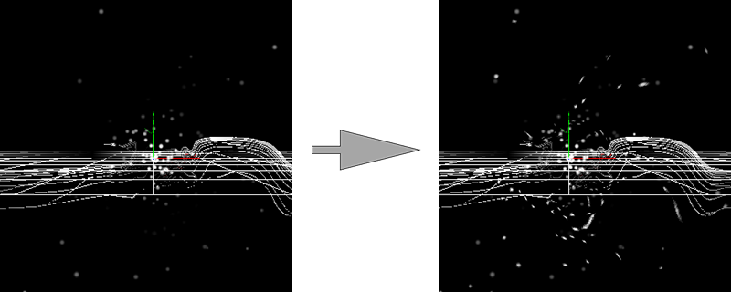
Many sample effects
More than 40 new sample effects are added. You can download these from the official website, too.
Bug fixes
Fixed many bugs.
1.30
File viewer
You can now easily select Effekseer's files and images, model files etc from Effekseer. It is convenient when viewing samples or selecting images.
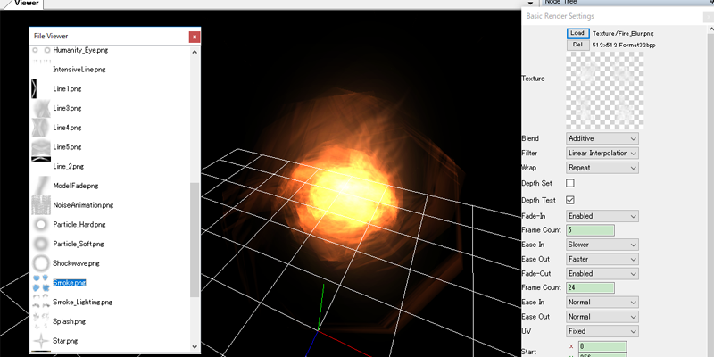
Launch you effects on UnrealEngine4, Cocos2d-x
UnrealEngine4, Cocos2d-x now also allows you to play Effekseer 's effects. This makes it possible to play effects in all major development environments.
| 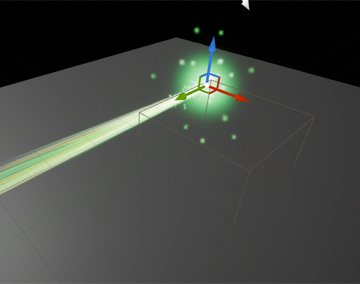 | 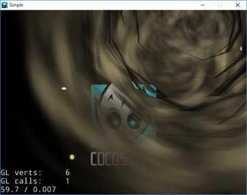 |
Improvements to loading 3d model
You can now load FBX and mqo files directly from Effekseer. It makes it easier to use the model.
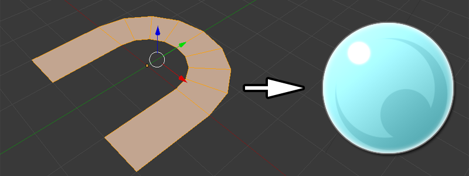
Color inheritance
It is now possible to inherit the parent's color as well as position, rotation and enlargement. This makes it possible to create more complicated effects.
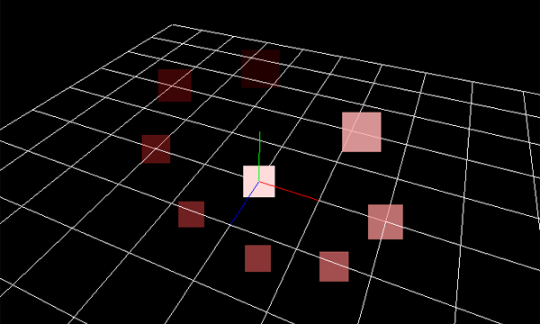
Icons
Icons are now displayed in the UI. This makes the structure of the effect easy to see.
| 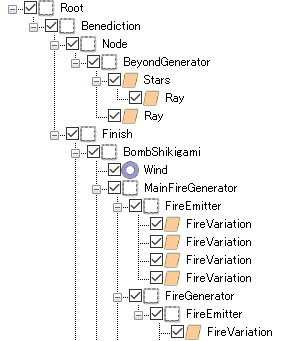 | 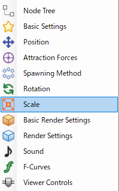 |
Many sample effects
More than 70 new sample effects are added. You can download these from the official website, too.
Bug fixes
Fixed many bugs.
Specification change
Specifications of distortion and effect generation timing have been changed. Please read help for details.
1.20
Alpha channel estimation
Alpha channels can be estimated when an effect is exported. With this, you can render effects on other screens without having to use additive blending. This is useful when showing effects in 2D games.

|

|
| Off | On |
Saving effects as an AVI file with alphaa
You can save effects as an AVI file, with an included alpha channel. This is useful for creating movies in video editing software such as AfterEffects, since the effect can be placed in its own video layer without obscuring ohter video layers beneath it.
Many sample effects
More than 20 new sample effects are added. You can download these from the official website, too.
Improvements to the Unity Plugin
Distortion and Asset bundle now work. Improved correspondence with multi-platform (iOS, Android, WebGL).

Changed hot keys
Hot keys take after AfterEffects.
Bug fixes
Fixed many bugs.
1.10
Color space
Now you can change a color space while editing effects.

|

|
English user interface
Now you can display the user interface in English.
| 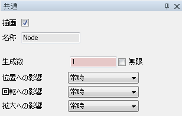 | 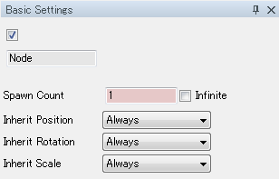 |
Many sample effects
More than 100 new sample effects are added. You can download these from the official website, too.
Improvements to the Unity Plugin
The plugin now supports loading resources from Resources directory.
Improvement to the Library for DXLibrary
The library now supports network and distortion.
Bug fixes
Fixed many bugs.